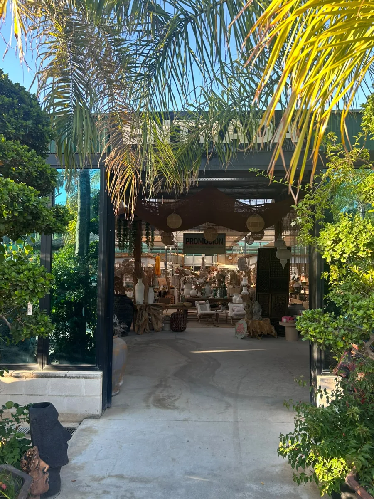
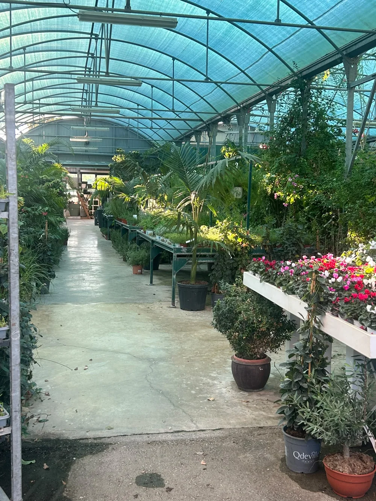
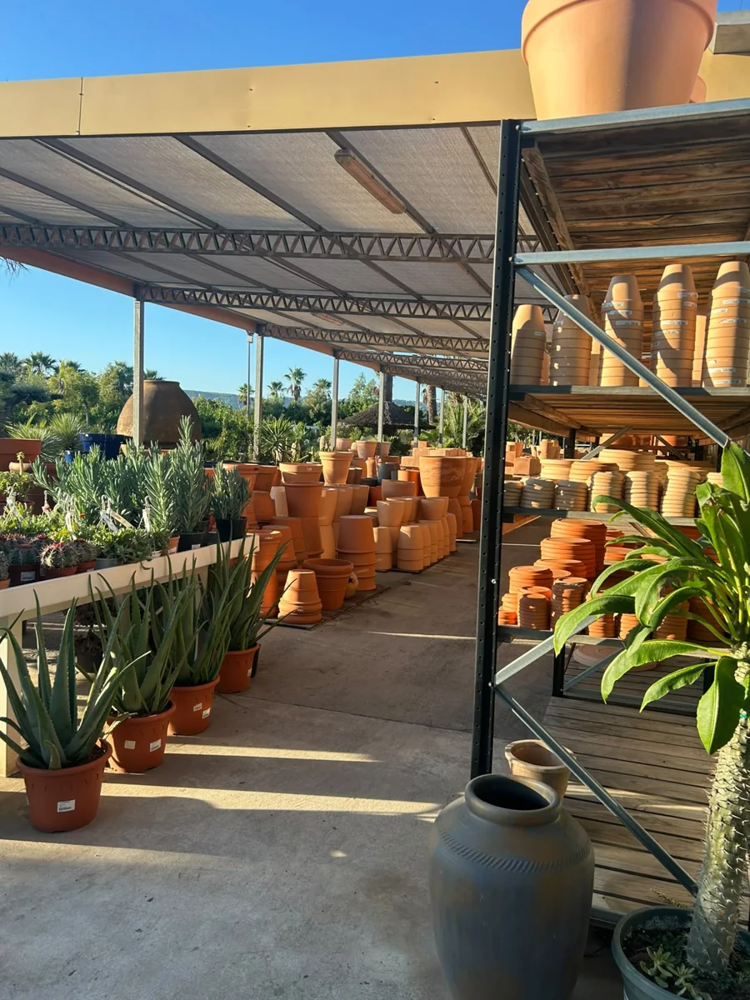

Nos encuentras aquí
Camí Assagador de Cabanes, s/n03730 Xàbia, AlicanteAbrir ruta en Maps

20.000 m² para inspirarte, encontrar lo que buscas y charlar con quienes conocen cada rincón del garden.
En Xàbia, entre el Montgó y la costa. El equipo te espera para ayudarte a elegir y resolver tus dudas.
Para festivos locales, consúltanos antes de venir.
Si buscas un ejemplar concreto, vienes por materiales o quieres hablar de un jardín, llámanos.
965 79 50 99 WhatsApp del gardenPlantas de interior y exterior, árboles, frutales, macetas, materiales y floristería. Cada zona tiene algo que descubrir.


Camí Assagador de Cabanes, s/n.
03730 Xàbia, Alicante.
Abre la ruta en tu móvil y disfruta del camino.
Abrir ruta en MapsClaro. Llama al 965 79 50 99 o escríbenos por WhatsApp para consultar variedades, tamaños y disponibilidad.
Sí. Cuéntanos la orientación, la luz y el espacio. Una foto o las medidas de tu maceta también nos ayudan a orientarte.
Trae tu idea y, si puedes, algunas fotos del espacio. También puedes preparar una solicitud de proyecto antes de visitarnos.
Si vas a recoger ejemplares grandes o una compra profesional, contacta antes con el equipo para organizar la visita.
Y si todavía no sabes por dónde empezar, date un paseo por nuestras plantas.